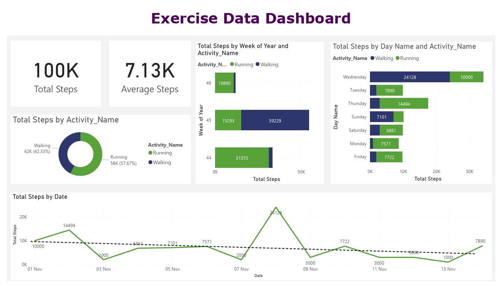

Power BI Exercise Data Dashboard
This dataset contains information regarding daily exercise routines, detailing the types of exercises performed and the corresponding durations for each activity.
GOAL
The goal is to create an interactive and visually engaging dashboard to analyze and present insights from the daily exercise dataset to provide a comprehensive overview of exercise patterns, types of activities undertaken, and their respective durations, for individuals to track, assess, and optimize their fitness routines.
CONCLUSION
This dashboard highlights a notable focus on running and walking activities in the exercise routine.
This concentration suggests a limited diversity in physical activities, potentially impacting overall fitness levels and
holistic well-being.
However, incorporating a variety of exercises such as strength training, flexibility exercises,
or different cardio activities can ensure a well-rounded fitness routine.
Also, Consideration of consulting with a fitness professional to create a personalized exercise plan that aligns with
individual goals can ensures better fitness.